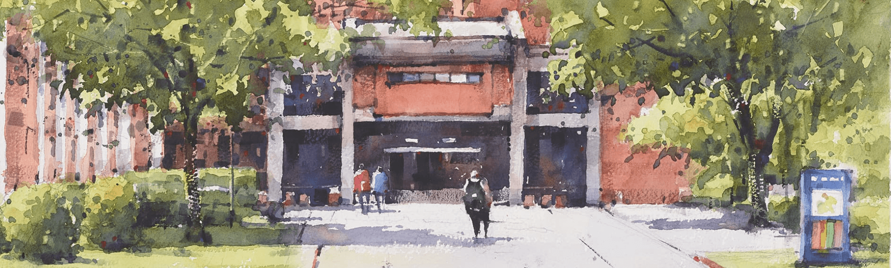
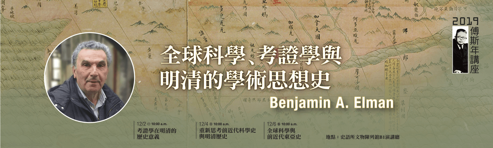
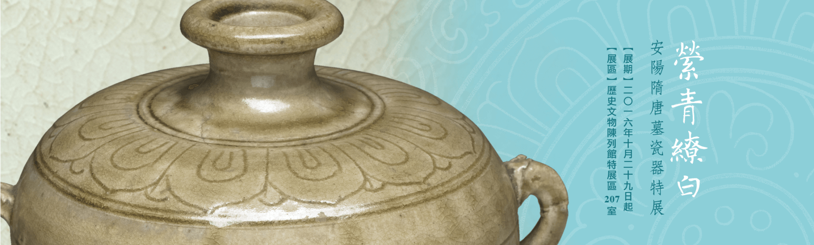
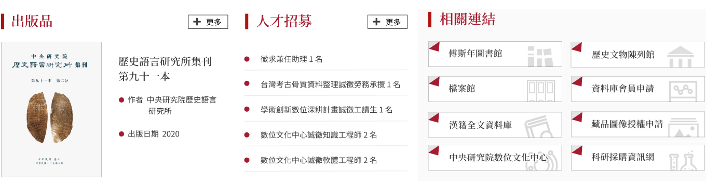
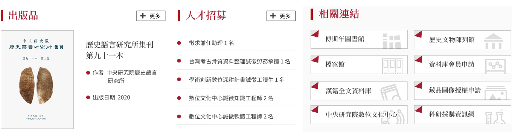
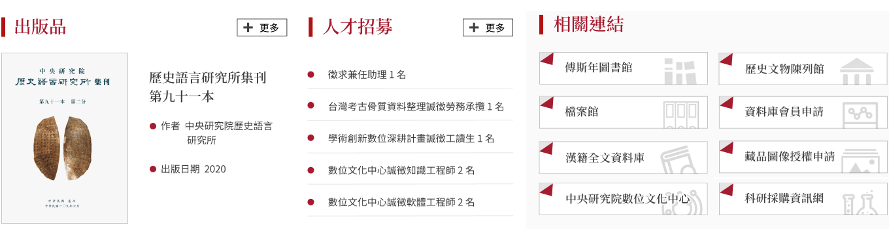

佈告欄
學術活動
講論會
專題演講
學術會議
研習營
傅斯年講座
最新消息
學者來訪
學術榮譽
公告事項
申請事項
人才招募
本所簡介
簡史
組織圖
現任主管
歷屆所長
學門簡介
歷史學門
考古學門
人類學門
文字學門
學術諮詢委員
6
人員名錄
研究人員
研究技術人員
通信暨兼任研究人員
通信研究員
兼任研究員
退休離職研究人員
博士後研究
博士候選人培育
訪問學者
行政人員
研究室與工作室
專題研究室
文化思想史研究室
法律史研究室
臺灣與東南亞考古學研究室
文物圖象研究室
生命醫療史研究室
禮俗宗教研究室
世界史研究室
古代文明研究室
數位人文學研究室
工作室
明清檔案工作室
漢籍全文資料庫工作室
地理資訊系統工作室
金文工作室
安陽工作室
出版品
最新出版品
專書
文字學
歷史文獻
考古學
民族學
目錄與索引
傅斯年講座
漢學會議論文集
史語所集刊
古今論衡
Asia Major
法制史研究
出版品搜尋
價目表（下載）
銷售通路
學術資源
傅斯年圖書館
歷史文物陳列館
檔案館
本所資料庫
交流研習
國際學術合作交流
研究獎助
傅斯年獎學金
黃彰健院士學術研究獎金
歷史研習營
兩岸歷史文化研習營
明清研究推動委員會
史語藝廊



窮碧落下黃泉，動手動腳找東西



 
